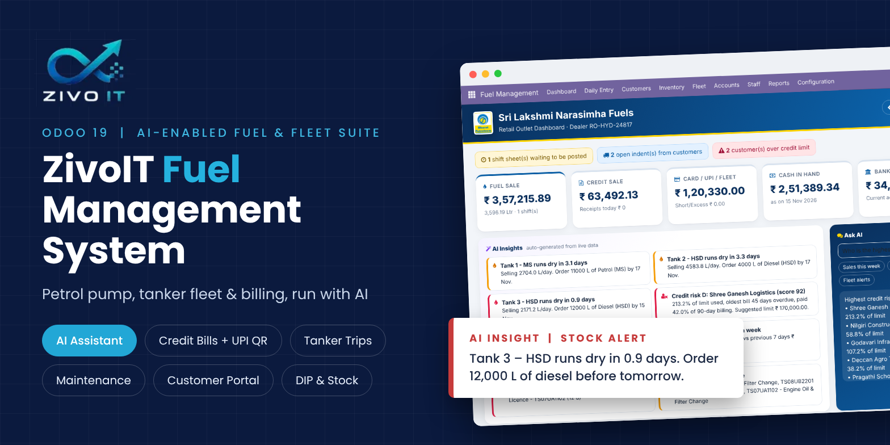
The complete, AI-enabled fuel station platform for Odoo 19: forecourt shifts, credit billing, tank stock, your own tanker fleet, maintenance, accounts, payroll and a customer self-service portal, in one app.
For oil-company retail outlets (BPCL, IOCL, HPCL dealers) and private fuel stations | Odoo 19 Community and Enterprise | On-premise and Odoo.sh
Nozzle shifts, credit customers, billing, tank stock, tankers, maintenance, ledger and payroll share one database. No re-entry, no spreadsheets.
Every bill shows the amount payable, due date, a PAID / PARTIALLY PAID / OVERDUE stamp, how the total is made up, a vehicle-wise summary and a scan-to-pay UPI QR code.
Forecasts stock-outs, flags suspicious fillings, grades customer credit risk and answers questions in plain English, for the owner and for every fleet customer.
Depot loading and doorstep diesel delivery trips post purchases, stock and sales automatically. Maintenance and statutory documents (PESO, permit, fitness, insurance) never lapse.
Day-by-day KPI tiles (fuel sale, credit sale, card / UPI / fleet card, cash in hand, bank, outstanding), alerts, an AI Insights panel generated from live data, an Ask AI box, quick actions, product rates, a 14-day sales chart, tank gauges, fleet status, stock-out forecast, credit exposure and recent slips.
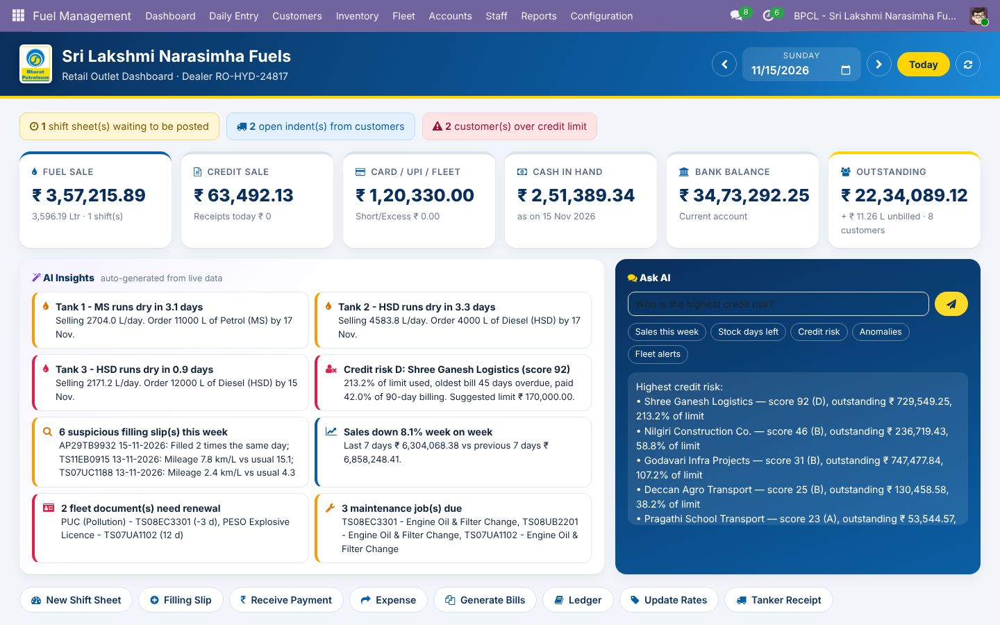
Period bills for one or all customers (weekly, fortnightly or monthly). Receipts are allocated to the oldest bills first, so each bill always shows amount paid, amount due and status. The PDF and the portal page present the bill in the order a customer reads it: how much and by when, then how the total is built, then which vehicle filled what, then how to pay.
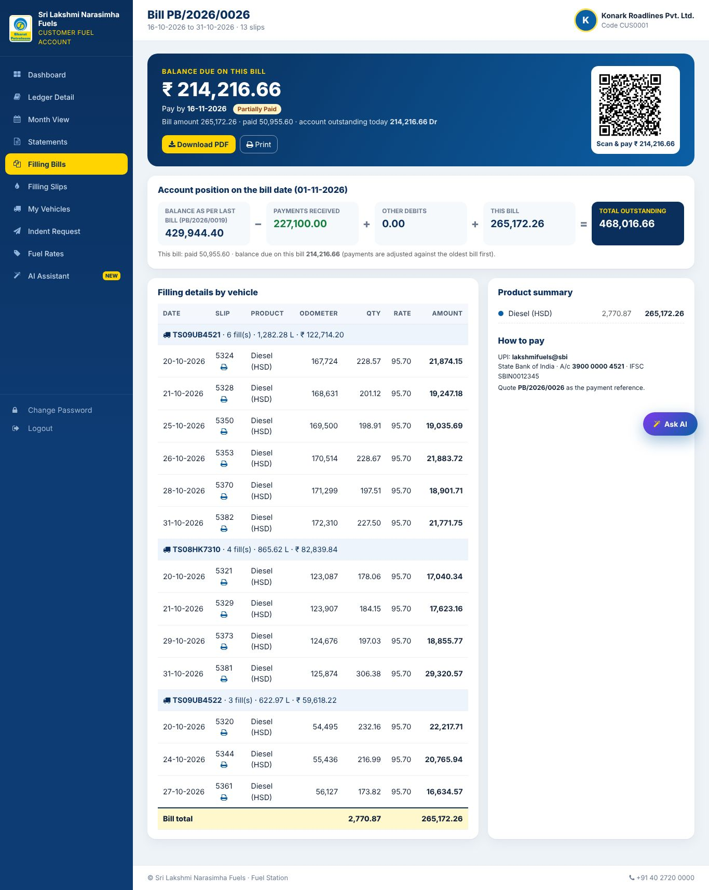
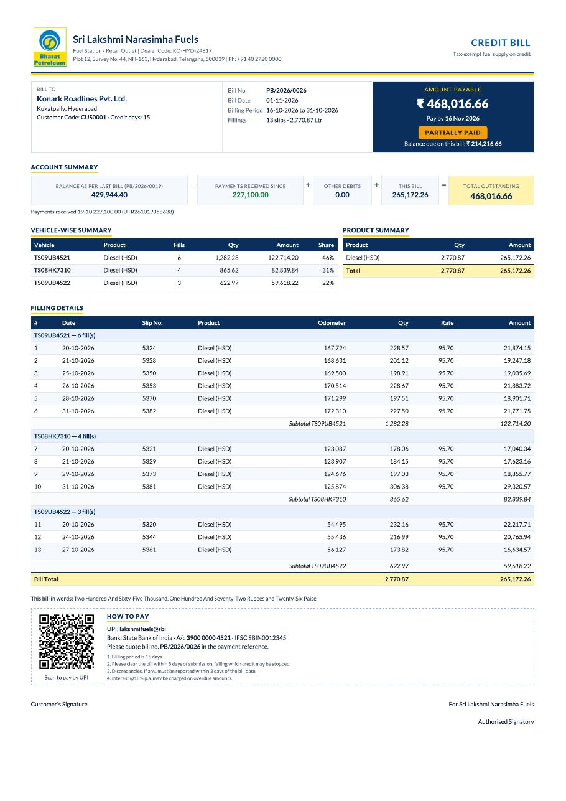
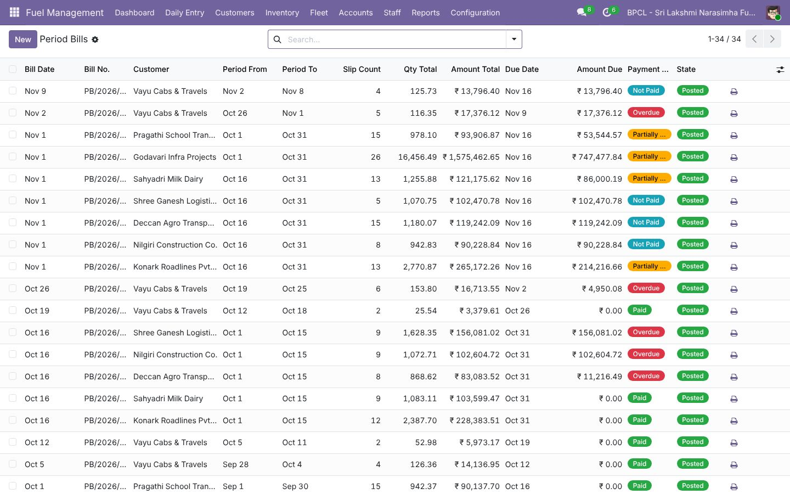
Integrated with Odoo Fleet. Tankers with compartments, delivery bowsers and service vehicles. Trips cannot be dispatched with expired documents, while the vehicle is in the workshop, or beyond capacity. Trip expenses, fuel logs with km/L, preventive maintenance by km or days, and job cards that post the cost and write the Fleet service log.
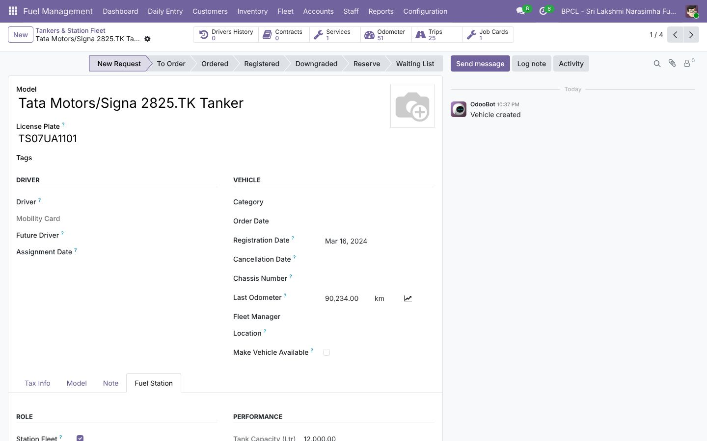
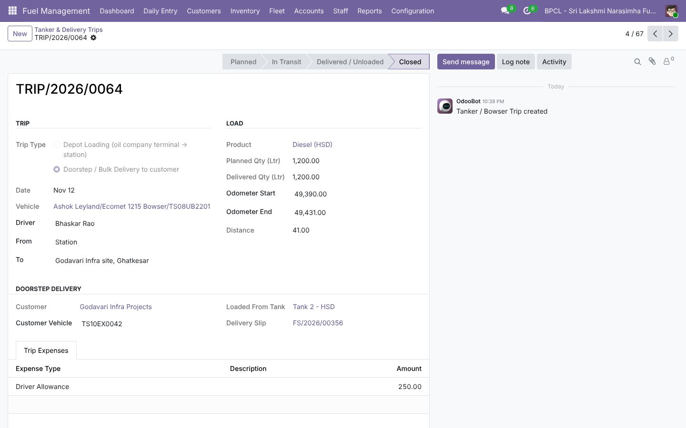
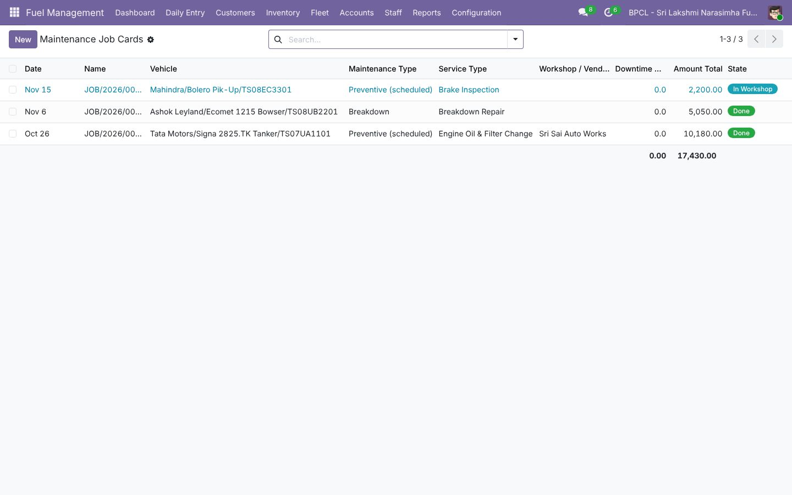
Fleet customers log in and see their balance, credit limit, available credit, AI insights, bills to pay, rates, ledger, monthly view, statements, bills, slips and vehicles, and can raise indents. The assistant answers questions such as "What is my balance?", "How much diesel did TS09UB4521 take last month?" or "Book 200 litres diesel for TS09UB4522" (it prepares the indent for review).
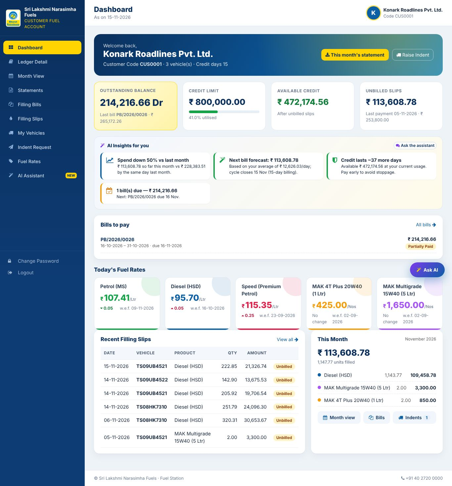
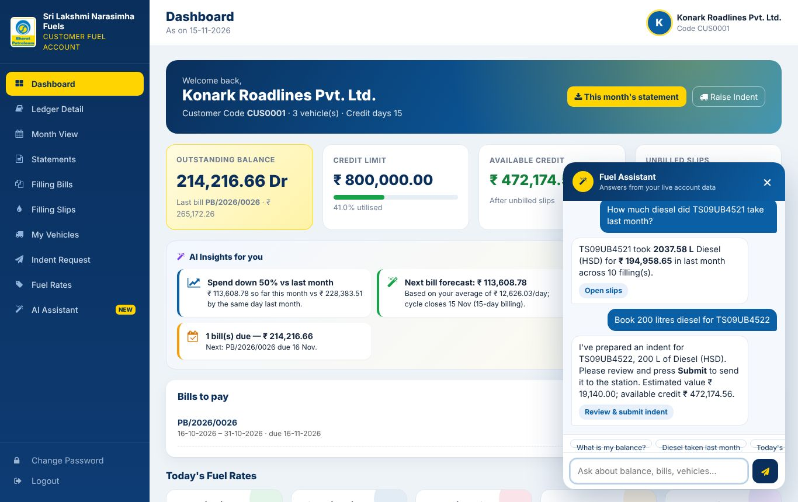
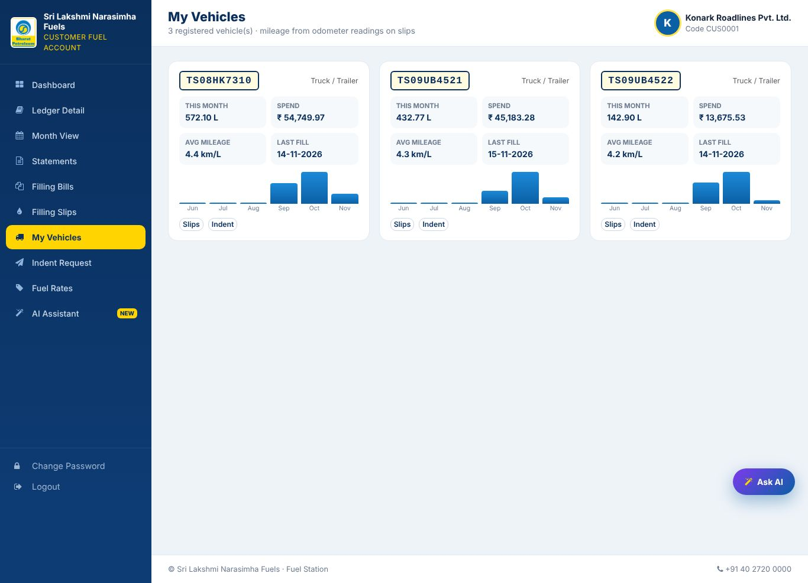
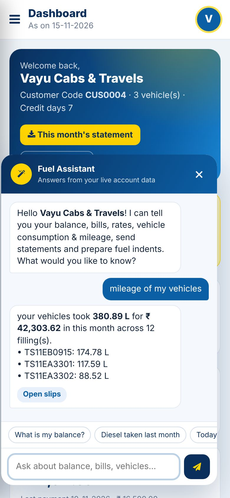
| Area | Features |
|---|---|
| Forecourt & shifts | Configurable shifts; shift sheet auto-loads running nozzles with last closing meter; testing litres; attendant per nozzle; credit slips of the shift picked up automatically; card, UPI and fleet-card collections; expected cash vs cash collected with short/excess posting; strict meter sequence; Daily Sales Report (PDF) |
| Products & rates | Fuels and lubricants; daily rate update wizard; dated rate history with change and trend graph; rate applied automatically by date |
| Credit customers | Customer code; credit limit (manager-only), credit days, billing cycle, stop-credit option; vehicles with tank capacity; live outstanding, unbilled, exposure, available credit, overdue amount; AI risk grade and suggested limit; opening balance; portal login wizard |
| Filling slips & indents | Credit-limit check with manager override; vehicle-tank capacity check; odometer and km/L per fill; AI anomaly flag; printable A6 slip; indents by quantity, amount or tank-full from portal, AI assistant or office; approve, reject, convert to slip |
| Billing | Generate bills for one or all customers; preview of unbilled slips; FIFO payment allocation; paid / partially paid / not paid / overdue; account summary; vehicle-wise and product summary; slips grouped by vehicle with odometer; amount in words; UPI QR; bank details and terms; cancel and re-bill |
| Tanks & stock | Tanks with capacity, dead stock and reorder level; DIP chart with interpolation (mm to litres); DIP readings with gain/loss posting; opening stock; tanker receipts (invoice vs received quantity, capacity guard); stock ledger and pivot |
| Fleet (Odoo Fleet) | Station-fleet flag and role (tanker, bowser, service); compartments and capacity; assigned driver; live status; statutory documents (insurance, permit, fitness, PUC, PESO licence, calibration, road tax, RC) with expiry state, renewal and daily alert activities |
| Trips | Depot loading (creates and posts the tanker receipt); doorstep delivery (issues stock, creates the customer slip and books the sale); dispatch blocks for busy vehicle, workshop, expired documents, stock and credit; trip expenses (toll, driver allowance, loading, parking, repair); odometer, distance and cost per km |
| Maintenance & fleet fuel | Preventive plans by km and/or days with due-soon and overdue status; job cards with parts, labour, tyres and oil, vendor, downtime and payment mode; Fleet service log created; fleet fuel logs from station tanks at last purchase cost or bought outside; km/L per vehicle |
| Accounts | Built-in double-entry ledger (no Odoo Accounting needed); chart of accounts; receipts, payments, journals, contra, card/UPI settlement with MDR charges; automatic vouchers from shifts, bills, purchases, trips, jobs and salaries; day book; account balances pivot; trial balance PDF |
| Staff | Pump roles (manager, cashier, filler, driver, cleaner); Basic/DA/HRA; daily attendance and register; monthly salary from paid days with incentive and advance recovery |
| AI | Stock-out forecast with order quantity and date; suspicious slip detection; credit-risk score, grade and suggested limit; station and customer insights; staff and customer assistants; conversation log; optional Anthropic Claude or OpenAI with automatic fallback |
| Customer portal | Dashboard; ledger with presets; month view; statements; bills with status, detail page and QR; slips with filters; vehicles with km/L and 6-month trend; indents; rates; AI chat; PDF and Excel downloads; responsive mobile layout; strict data isolation |
| Reports | PDF: credit bill, customer statement, filling slip, DSR, trial balance. Excel: customer ledger, filling slips. Pivots and graphs: fuel sales, credit sales, stock, balances, attendance, rates |
| Capability | Method |
|---|---|
| Stock-out forecast | Average daily issues of the last 14 days (nozzle sales, fleet issues, deliveries) against usable stock gives days left, the reorder date and a tanker quantity that fits the ullage. |
| Suspicious slips | Quantity above the vehicle's tank, the same vehicle filled twice in one day, or km/L below 60% of the vehicle's usual mileage. |
| Credit risk | Score 0-100 from limit utilisation (40%), days the oldest bill is overdue (40%) and the 90-day payment ratio (20%); grade A-D and a suggested limit based on average monthly billing. |
| Assistant | Understands balance, limit, rates, bills, payments, statements, consumption by vehicle, product and period, mileage and indent requests, and returns action links. Runs fully inside Odoo by default. |
| Optional LLM | Choose Anthropic Claude or OpenAI and enter your API key. Only the asking customer's own account summary is sent; if the provider is unreachable, the built-in answer is used. |
How this app compares with typical fuel-station apps on the Odoo App Store and with typical standalone desktop petrol pump software. "Partial" means usually available in simplified form or only in some products.
| Capability | This app | Typical Odoo App Store fuel apps | Typical desktop pump software |
|---|---|---|---|
| Nozzle meter shift sheets, testing, cash reconciliation | Yes | Yes | Yes |
| Tanks, DIP chart, DIP variance posting | Yes | Partial | Yes |
| Credit customers with limit enforcement and vehicles | Yes | Partial | Yes |
| Period bills with payment status (paid / partial / overdue) | Yes | Partial | Partial |
| Vehicle-wise bill summary, odometer on bill, UPI QR | Yes | No | Partial |
| Customer self-service portal (ledger, statements, bills, slips, indents) | Yes | Rare | Separate add-on |
| Own tanker fleet: compartments, depot trips, doorstep delivery | Yes | Rare | No |
| Fleet maintenance plans, job cards, PESO / permit / fitness expiry | Yes | Rare (station licences only) | No |
| AI stock-out forecast and tanker order suggestion | Yes | No (low-stock alerts) | No |
| AI suspicious-slip detection and credit-risk grading | Yes | No | No |
| AI assistant for staff and customers | Yes | No | No |
| Works without Odoo Accounting / Inventory (own ledger and stock) | Yes | Usually requires them | Not applicable |
| Payroll from attendance | Yes | Partial | Partial |
| Automated test suite included | Yes (28 tests) | Rare | Not applicable |
| Multi-station in one database | Roadmap | Often | Partial |
| Point-of-sale terminal for cash fuel sales | Not included (shift-based) | Some | Yes |
| Loyalty programme | Not included | Some | Some |
Based on publicly listed features of fuel-station apps on apps.odoo.com and common desktop products. Features of other products vary by vendor and version.
| Odoo version | 19.0 Community and Enterprise; On-premise and Odoo.sh |
| Odoo dependencies | base, mail, portal, web, hr (Employees), fleet (Fleet) |
| Python libraries | xlsxwriter, qrcode, requests (all part of Odoo's standard requirements) |
| PDF engine | wkhtmltopdf 0.12.6 (patched Qt), as recommended by Odoo |
| Security groups | Fuel Management / Operator-Cashier and Manager-Owner; portal customers see only their own account |
| Language | English (translation template included in i18n) |
zivoit_fuel_management folder to your addons path, update the Apps list and install ZivoIT Fuel Management System./web/login and land on /my/fuel.Do I need Odoo Accounting or Inventory?
No. The app has its own double-entry ledger and tank stock. It can run alongside Odoo Accounting.
Does the AI need internet or a paid API?
No. The built-in AI engine runs inside Odoo. Anthropic Claude or OpenAI can optionally be enabled with your own API key.
Is customer data shared with the AI provider?
Only when you enable an external provider, and then only the asking customer's own account summary. The built-in engine keeps all data in your database.
Can customers see each other's data?
No. Every portal page, download and AI answer is limited to the logged-in customer's account; this is covered by automated tests.
Does it work on Odoo Online (SaaS)?
Odoo Online does not allow custom apps of this kind. Use Odoo.sh or on-premise.
Can it be branded for my oil company?
Yes. Set your company name and logo; they appear on the dashboard, bills, statements and portal.
19.0.2.0.3: Improved App Store description page.
19.0.2.0.2: App Store packaging fixes, module moved to the repository root.
19.0.2.0.0: Fleet integration (tankers, trips, doorstep delivery, maintenance, documents), AI engine and assistants, redesigned credit bill with payment status and UPI QR, vehicle analytics, portal AI chat, 28 automated tests.
19.0.1.0.0: Shifts, slips, bills, tanks and DIP, vouchers, staff, admin dashboard and customer portal.
ZivoIT Technologies, Official Odoo Partner | www.zivoit.com | info@zivoit.com